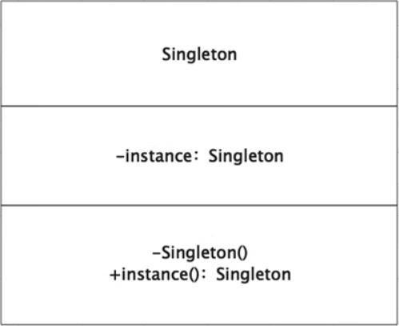

首页 > 编程笔记
Python单例模式（附带源码）
一个类被设计出来，就意味着它具有某种行为（方法）、属性（成员变量）。一般情况下，当我们想使用一个类时，就创建一个新的对象，这时候解释器会帮我们构造一个该类的实例，这么做会比较耗费资源。如果能在解释器启动时就创建好对象，或者是某一次创建好对象后就再也不用创建了，这样就能节省很多 资源。
在图1中，实现单例模式的一个简单方法是，使构造函数私有化，并创建一个静态方法来完成对象的初始化。这样，对象将在第一次调用时创建，此后，这个类将返回同一个对象。
在使用 Python 的时候，我们的实现方式要有所变通，因为它无法创建私有的构造函数。我们可以在类的 _ _new_ _ 方法中判断当前类是否已经有 Instance 实例，如果已经有 Instance 实例表示该类是否已经生成了一个对象，否则就是没有。
让我们拿一个现实项目中的场景来理解单例模式的实现。在某 Web 项目中只能只有一个上下文对象 Application，多次获取上下文对象后如果，相同地址一样表示只有一个对象，是单例模式。
请看下面的 Python 代码：
仅有一个实例，可以节约系统资源。
职责过重，既充当工厂角色，又充当产品角色。
如果长期不使用会被自动回收，导致下次使用时需重新实例化。
在图1中，实现单例模式的一个简单方法是，使构造函数私有化，并创建一个静态方法来完成对象的初始化。这样，对象将在第一次调用时创建，此后，这个类将返回同一个对象。

图1：单例模式
图1：单例模式
在使用 Python 的时候，我们的实现方式要有所变通，因为它无法创建私有的构造函数。我们可以在类的 _ _new_ _ 方法中判断当前类是否已经有 Instance 实例，如果已经有 Instance 实例表示该类是否已经生成了一个对象，否则就是没有。
让我们拿一个现实项目中的场景来理解单例模式的实现。在某 Web 项目中只能只有一个上下文对象 Application，多次获取上下文对象后如果，相同地址一样表示只有一个对象，是单例模式。
请看下面的 Python 代码：
class Application(object):
def _ _new_ _(cls):
if not hasattr(cls, 'instance'):
print("create object")
cls.instance = super(Application, cls)._ _new_ _(cls)
return cls.instance
s1 = Application()
# <_ _main_ _.Application object at 0x104d6d2e8>
print(s1)
s2 = Application()
# <_ _main_ _.Application object at 0x104d6d2e8>
print(s2)
单例模式的适用场景
单一的实例。 在整个运行时间内，内存中只有一个对象，一般该对象涉及网络、资源等操作。单例模式的优点
严格控制对唯一的实例的访问方式（可以允许访问有限数量的实例）。仅有一个实例，可以节约系统资源。
单例模式的缺点
单例模式没有抽象层，扩展比较困难。职责过重，既充当工厂角色，又充当产品角色。
如果长期不使用会被自动回收，导致下次使用时需重新实例化。
关注公众号「站长严长生」，在手机上阅读所有教程，随时随地都能学习。内含一款搜索神器，免费下载全网书籍和视频。

微信扫码关注公众号